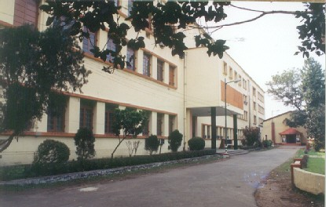

Bengal Engineering College


The Bengal Engineering College (Deemed University) owes its origin to the erstwhile Bengal Engineering College, the history of which goes to the nineteenth century when industries in the sense we understand today, were practically absent. Prompted by the idea of meeting requirement of trained engineering personnel for the Public Works Department, the then council of Education, Bengal, decided to open Civil Engineering classes and a Professorship in Civil Engineering was created at Hindu College, Calcutta, in the year 1843-44. A College of Engineering was started by the name of Civil Engineering College on 24th November , 1856, in the premises of the Writers Building, Calcutta.
With the establishment of Calcutta University on January 24, 1857, the college was affliated to this university in May 1857. The first degree examination in Bachelors of Civil Engineering was held in 1864 in which only 2 students graduated. In 1865, the college merged with Presidency College, Calcutta and from 1865 to 1869 the college functioned as the Civil Engineering Department of Presidency College. In 1880, the college was shifted to its present campus at Shibpur, Howrah, and was christened the 'Government College, Howrah,' in the premises of Bishop's College. It started imparting training in Civil as well as Mechanical Engineering. The college became wholly residential from the year 1889.
In 1921, the name of the college was changed to 'Bengal Engineering College' (popularly known as B.E.College). During 1921-43, the various departments of the college were reorganised on the recommendation of the 'Mukherjee Committee' under the Chairmanship of Sir R.N. Mukherjee, one of the most distinguished ex-student of the collge. The first batch of students in Mechanical Engineering appeared in the degree examination in 1932. The degree course in Electrrical Engineering was introduced during 1935-36 and that in Metallurgical Engineering in 1939. The department of Humanities started in 1945, Applied Mechanics in 1947, and Architecture, Town and Regional Planning department in 1949.
With the end of Second World War, the necessity of further expansion and the devlopment of the college was felt and a 'Committee for the development of Higher Engineering and Technical Education in Bengal' under the Chairmanship of the Director of Public Instruction recommended two plans - one 'Immediate' and the other 'Five Year Plan' for the college. Under the 'Immediate' plan the committee made recommendations regarding the increase of student strength from 300 to 520, an improved curriculum, better teaching staff, a greater range of degree courses and a close liason with industry. The objective of the 'Five Year Plan' was to upgrade the college to the status of a modern and well equipped institution with facilities for post graduate study and research.
A new building was constructed in the year 1949 and all academic departments were moved to the new building. In 1954, post graduate courses in Civil, Mechanical, Electrical, and Metallurgical were introduced. A post graduate certificate course in Naval Architecture was also introduced during this period. Doctoral programs were also introduced at this time and approved by Calcutta University to enhance research activities (which started as far back as 1901) in the college. During 1954-55, an agreement was concluded by this college and the University of Wisconsin, USA, whereby six guest professors from the USA joined the college and in exchange, five teachers from the college went to the USA as Research Associate. This scheme, known as Technical Co-operation Programme of the USA, helped the college in developing laboratories, post graduate programmes and research facilities.
The college celebrated its gala centenary function inaugurated by Dr. B.C. Roy on the 25th of December, 1956 and concluding session was graced by Pandit Jawarlal Nehru on 14th January, 1957. The department of Electronics & Telecommunications Engineering was sanctioned in 1956. The department of Mining Engineering started functioning in 1956. The introduction of a Teachers' Training course during 1959-60 was a noteworthy event. The college started its first Computer Centre in 1976-77 and a Microprocessor Laboratory in this centre in 1979. The 125th Anniversary of the college was celebrated in December 11, 1981, with inauguration by Sri N. Sanjiva Reddy, the then President of India.
In 1982, a new degree course in Computer Science & Technology was started and with modernisation of the facilities, this department started offering the Master of Engineering courses in 1988 and Master of Computer Applications courses in 1991. Several laboratories have been established of which the following are worth mentioning:
Two CAD workstations in the Department of Mechanical Engineering
| A Numerical Analysis laboratory with an extensive computer network
| A DTP laboratory in the Department of Mathematics
| A Computer Aided Architectural Design in the Department of Architecture,
Town & Regional Planning. | |
The college was selected as a participating institute under the World Bank EIDP Project and an endowment in th eamount of Rs. 200,000,000 was received for upgrading the teaching facilities and laboratories in the Electronics and Computer Science Departments. An E-mail facility was offered by the DOE under this project through which the university can have install access to information super highway.
The alumni of the college have occupied or are occupying top positions in various national and international organisations. In recognition of its yeoman's service to the nation for 143 years of its existence with its well organised infrastructure, the college was elevated to the status of a "Deemed University" in 1992 by the Ministry of Human Resource Development, Government of India on the recommendation of a UGC Expert Committee. As a result, Dr. Sankar Dayal Sharma, the President of India, inaugurated the University in March 1993. It has been an important leap forward since. As a "Deemed University", it now has statutory power to confer degrees and has grown into a Centre of Excellence in the mould of the IITS, IISC., ISI, etc. in the country. The first convocation of the University was held on 9th January, 1997 with Chief Guest Shri H.D. Devegouda, the Prime Minister of India.
Courtesy -http://www.becollege.org/becollege/history.html